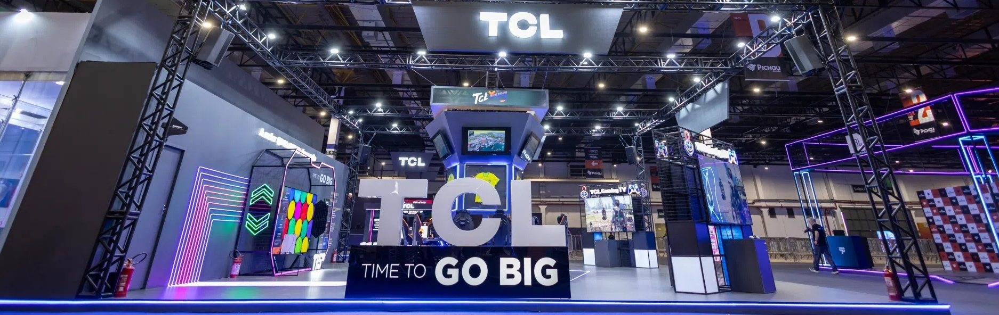
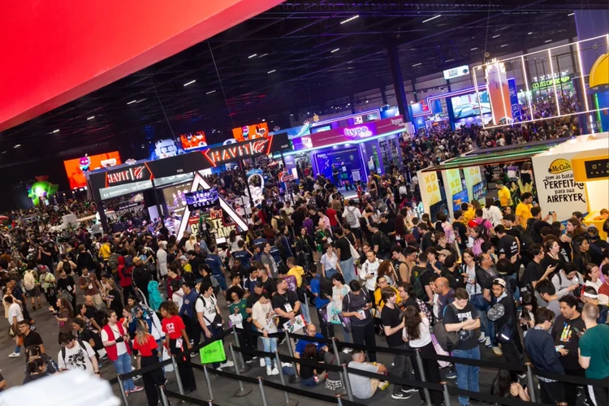
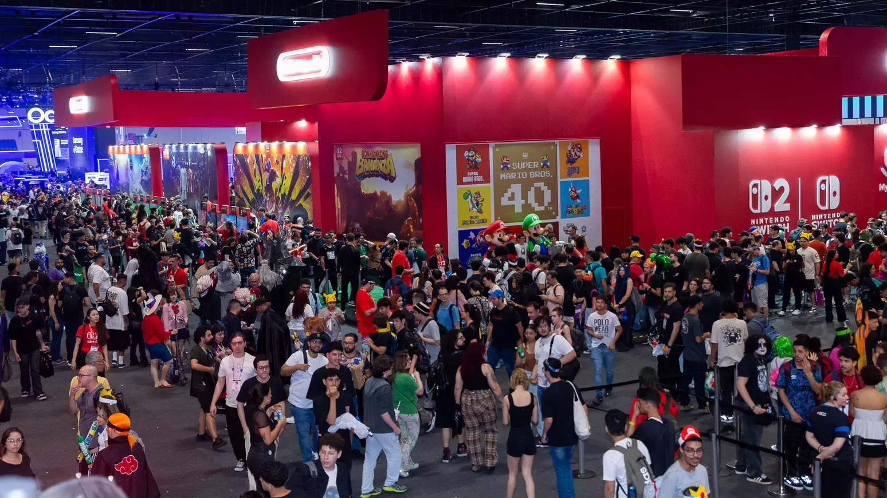

Torneios de games
Smash, Mario Kart e FIFA ganham campeonatos com horários próprios ao longo da tarde. Os torneios terminam com a final, marcada para as 17:10.
Prepare-se para entrar em um universo onde games, cultura geek e diversão se encontram! O Spawn Point é um evento criado para reunir fãs de jogos eletrônicos, animes, filmes, séries e tudo aquilo que faz parte da cultura nerd. Um espaço para compartilhar paixões, conhecer pessoas com os mesmos interesses,desfrutar da presença de pessoas queridas e famosas, participar de atividades e viver experiências únicas.
Seja você um gamer competitivo, um fã de grandes sagas ou alguém que simplesmente ama esse universo, o Spawn Point é o lugar ideal para se conectar com a comunidade geek. Reúna seus amigos, prepare seus controles e venha fazer parte dessa aventura!


O Spawn Point foi pensado para proporcionar um ambiente de interação, entretenimento e descoberta. Os jogos eletrônicos vão além da tela: envolvem estratégia, criatividade, trabalho em equipe e desafios que podem ser compartilhados entre pessoas com diferentes experiências e interesses. O evento busca reunir esses elementos em um espaço onde o público possa aproveitar atividades variadas e conhecer novas formas de se conectar com esse universo.
A proposta do Spawn Point é oferecer uma programação diversificada, com atividades que valorizam tanto a participação individual quanto a interação entre os visitantes. Entre as possibilidades estão partidas de jogos eletrônicos, desafios, competições amistosas e momentos de convivência, criando oportunidades para testar habilidades, aprender algo novo e compartilhar experiências.
Além dos jogos, o evento também abre espaço para outras formas de entretenimento ligadas ao universo dos games, como referências a personagens, histórias, produções audiovisuais e diferentes expressões artísticas. A intenção é proporcionar uma experiência que vá além de uma única atividade, permitindo que cada participante encontre algo de seu interesse.
Um evento também é construído pelas pessoas que participam dele. Por isso, o Spawn Point valoriza a convivência, a troca de conhecimentos e o respeito entre os visitantes. Seja para competir, acompanhar as atividades ou simplesmente aproveitar o ambiente, cada pessoa pode participar de acordo com seus próprios interesses.
A interação entre os participantes também permite descobrir novos jogos, trocar recomendações e conhecer diferentes perspectivas sobre atividades que fazem parte do cotidiano de muitas pessoas. Dessa forma, o encontro se torna uma oportunidade de lazer e de aproximação entre pessoas que compartilham interesses em comum.
O Spawn Point convida o público a sair da rotina e participar de uma experiência coletiva. Mais do que acompanhar uma programação, a proposta é aproveitar o momento, experimentar atividades e criar boas lembranças ao lado de outras pessoas.
Prepare-se para conhecer novas possibilidades, encarar desafios e aproveitar cada momento. Afinal, toda grande aventura começa com o primeiro passo, e o seu próximo ponto de partida pode ser aqui.

O evento conta com alguns stands, cada um possuindo suas proprias modalidades, veja mais sobre cada um adiante.
Smash, Mario Kart e FIFA ganham campeonatos com horários próprios ao longo da tarde. Os torneios terminam com a final, marcada para as 17:10.
Abre a programação às 13:00. É uma opção para quem prefere um desafio mais calmo e estratégico, e serve tanto para quem joga sempre quanto para quem quer tentar.
O espaço de cosplay recebe os participantes caracterizados logo no começo do evento. No meio da tarde acontece o concurso, quando os looks são apresentados ao público.
Um cantinho para jogar clássicos de consoles antigos. É bom para matar a saudade, mostrar para os amigos como era jogar antigamente e descobrir títulos que marcaram época.
Perguntas sobre os universos que você mais acompanha. O quiz de animes abre a programação e o de séries vem logo em seguida, ideal para testar quem sabe mais.
Mesas para quem curte jogos de cartas. Dá para jogar partidas casuais, aprender com outros jogadores e trocar dicas de estratégia.
Os jogos de tabuleiro aparecem no meio da tarde e o RPG de mesa fecha o evento. Os dois são feitos para jogar em grupo, conversar e criar histórias juntos.
Para quem quer aprender fazendo. Na oficina de pixel art você cria seus próprios desenhos em poucos pixels, e na de mangá aprende noções básicas do traço.
Hora de soltar a voz cantando aberturas de animes e séries. Não precisa cantar bem, a graça é a animação de quem está assistindo.
Espaço para ver, comprar e trocar itens ligados à cultura geek, como figures, cards e outros itens de coleção.
Uma conversa aberta sobre cinema, com espaço para dar opinião, ouvir os outros e descobrir recomendações novas.
O free play deixa você jogar sem compromisso com torneio. Para fechar, os sorteios e o encerramento reúnem todo mundo no mesmo lugar.
| Horário | Stand 1 | Stand 2 | Stand 3 | Stand 4 | Stand 5 |
|---|---|---|---|---|---|
| 13:00 | Torneio de xadrez | Cosplay | Retro games | Quiz de animes | Card games |
| 13:50 | Smash | Oficina de pixel art | Retro games | Quiz de séries | Card games |
| 14:40 | Torneio de Mario Kart | Concurso de cosplay | Jogos de tabuleiro | Karaokê de aberturas | Oficina de desenho mangá |
| 15:30 | Torneio de Mario Kart | Concurso de cosplay | Jogos de tabuleiro | Karaokê de aberturas | Oficina de desenho mangá |
| 16:20 | Campeonato de FIFA | Feira de colecionáveis | RPG de mesa | Debate sobre filmes | Free play |
| 17:10 | Final dos torneios | Feira de colecionáveis | RPG de mesa | Sorteios e encerramento | Free play |